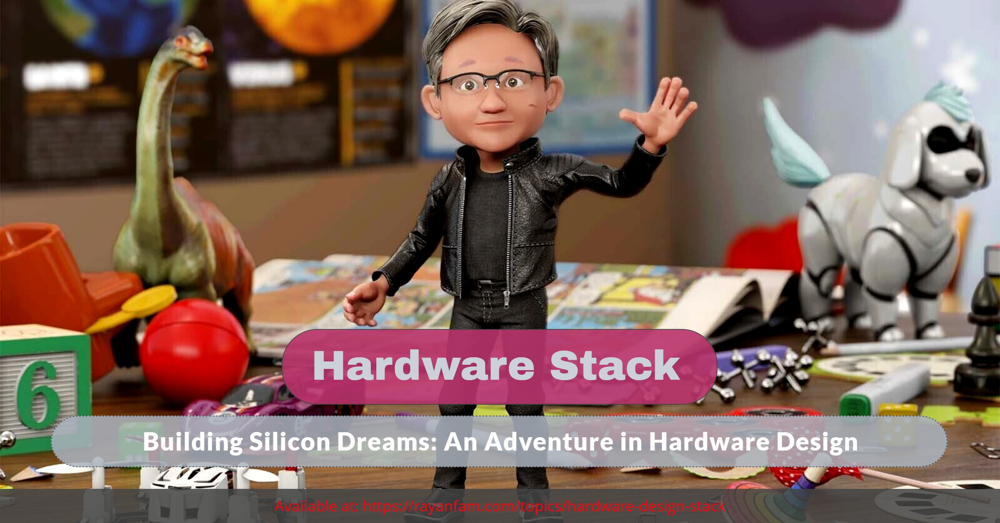
Story Time
Exploring the internals of processors has long been a fascination of mine. After spending a lot of time experiencing different processor features like hypervisor and configuring different x86 MSRs, I was seeking to find a way of knowing how exactly these concepts and configurations are made and how they work on the silicon.
Initially, my knowledge of hardware design was limited to a basic understanding of VHDL and Verilog gained from a microarchitecture design class at university. However, I decided to investigate and go deeper into this field and acquire more knowledge, which I am now eager to share with you.
This article is neither a deep dive into the hardware design nor does it assume any prior knowledge of hardware design. Instead, it provides an overview of fundamental hardware design concepts, introduces the tools and devices used in the process, and aims to give you a foundational understanding of the hardware design industry.
My journey in hardware design started when I was looking to find the actual implementation of different processors. After that, I came around two major open-source RISC-V processors.
These projects are one of the best implementations of RISC-V architecture in which you can use the source code to modify the microarchitecture, add/modify/remove CPU instructions, and finally synthesize the generated Verilog codes into a Xilinx FPGA or if you’re a millionaire you can give your design to TSMC to fabricate it for you :)
For those who don’t know about RISC-V, it’s an architecture (just like x86 and AMD64) that mainly comes with RISC architecture. There are two fundamental architectures in computer design: 1) CISC and 2) RISC.
The primary distinction between Complex Instruction Set Computer (CISC) and Reduced Instruction Set Computer (RISC) architectures lies in their approach to instruction execution. CISC, exemplified by the x86 architecture, typically employs a large and varied instruction set, often with complex addressing modes, allowing a single instruction to perform multiple operations. In contrast, RISC architectures like ARM and RISC-V utilize a simplified instruction set with fixed-length instructions, focusing on streamlined, single-cycle instruction execution.
Based on these explanations, I think we can start our journey from the designing steps of a chip and finally synthesizing into an FPGA our making GDSII (more about it later) layouts.
Please bear in mind, as you read the rest of this article, it is written by someone with a primary background in OS security and low-level programming, rather than being an expert hardware designer. Furthermore, this article is not an in-depth exploration but rather a high-level overview that provides technical examples and explanations to elaborate on the concepts and distinctions. I would be happy to hear if you have any feedback, corrections, and discussion points. You can use the comments section below.
Table of Contents
- Story Time
- Table of Contents
- Introduction
- Analog Signals/Protocols
- Digital Signals/Protocols
- Source Code
- Moore’s Law & Amdahl’s Law
- Terms
- Hardware Description Languages (SystemVerilog, Verilog, VHDL)
- Generating Hardware Using Chisel
- C/C++ in Hardware Design
- Vitis HLS
- Simulating Codes
- Simulating HDL Code Using GTKWave or ModelSim
- Testing Codes in Chisel
- Testing HDL Codes Using Verilator
- Synthesising HDL Codes
- Programming Xilinx FPGAs Using Vivado
- Vivado Netlists
- The Memory
- Distributed RAMs in FPGAs
- Block RAM (BRAM) in FPGAs
- Static RAM (SRAM) in ASIC
- Elaborating ASIC Designs
- Building Hardware Layout (GDSII)
- Reverse Engineering Netlists
- Conclusion
- References
Introduction
Over the past decades, the silicon industry changed drastically reaching from 10 µm (1973) to 3 nm (2022). Shrinking chips offer advantages including increased performance, higher integration density, reduced power consumption, improved heat dissipation along economic advancements. These benefits will drive the technological companies to contribute to smaller, more powerful, and energy-efficient chips. However, it also brings challenges related to manufacturing complexity and fundamental physical limits as transistors approach atomic scales.
| Wavelength (µm) | 10 | 6 | 3 | 1.5 | 1 | 0.8 | 0.6 | 0.35 | 0.25 | 0.18 | 0.13 | 0.09 | 0.065 | 0.045 | 0.032 | 0.022 | 0.014 | 0.01 | 0.007 | 0.005 | 0.003 | 0.002 |
|---|---|---|---|---|---|---|---|---|---|---|---|---|---|---|---|---|---|---|---|---|---|---|
| Year | 1971 | 1974 | 1977 | 1981 | 1984 | 1987 | 1990 | 1993 | 1996 | 1999 | 2001 | 2003 | 2005 | 2007 | 2009 | 2012 | 2014 | 2016 | 2018 | 2020 | 2022 | 2024 |
However, there are technological limitations that prohibit the shrinking of the transistors (later will be discussed as Moore’s law).
Now, let’s see the hardware design from a broader view. Have you ever asked yourself why computers are 0’s and 1’s? There are plenty of scientific and engineering theories and concepts that describe why computers are using 0’s and 1’s (and using boolean algebra), but a very simple explanation is that the current technology of semiconductors works best with zero and one (high and low voltage) signals rather than analog signals. It’s always more efficient to use analog devices as long as we’re not concerned with errors! If it was not because of errors, then probably the current devices that rely on deterministic and correct results are all made of analog devices. If I don’t want to oversimplify things, I can say, that while it’s true that some functions can be efficiently performed using analog signals (e.g., audio and video processing), digital computing offers several advantages, including accuracy, precision, ease of replication, and error correction.
The same is true for digital/analog protocols. Usually, it’s more efficient to send data over analog signals as you can send data at higher bitrate and longer distances. But, why there are digital signals while analog is naturally better? Simple answer, because analog has errors and you cannot guarantee the data will be correct at both sender and receiver.
Here is a list of digital and analog protocols.
Analog Signals/Protocols:
- VGA (Video Graphics Array)
- RCA (Radio Corporation of America)
- XLR (External Line Return)
- 3.5mm Audio Jack
- Component Video
- Composite Video
- S-Video (Separate Video)
- HDMI (High-Definition Multimedia Interface)
- DVI (Digital Visual Interface) - Some variants support analog signals.
- VGA-to-HDMI Converters (Analog to Digital conversion)
Digital Signals/Protocols:
- USB (Universal Serial Bus) [Usually]
- SPI (Serial Peripheral Interface)
- I2C (Inter-Integrated Circuit)
- UART (Universal Asynchronous Receiver-Transmitter)
- Ethernet (IEEE 802.3)
- HDMI (High-Definition Multimedia Interface) - Also supports digital audio.
- DisplayPort
- PCIe (Peripheral Component Interconnect Express)
- SATA (Serial ATA)
- CAN (Controller Area Network)
Having the above knowledge, let’s explore each step more comprehensively. The rest of this article covers how digital chips are designed at different levels and discusses different tools that are used at each step.
Source Code
The full source code of the codes used in this blog post is available on GitHub : [https://github.com/SinaKarvandi/hardware-design-stack]
Moore’s Law & Amdahl’s Law
There are two important laws in computer architecture. One is Moore’s law and the other is Amdahl’s law.
Moore’s law is defined as, an observation (prediction) that the number of transistors on a microchip roughly doubles every two years, whereas its cost is halved over that same timeframe.
If you have studied computer science at the university, you probably saw that professors always use a slide about Moore’s Law, seeking to justify their lessons, and declare that Moore’s Law is no longer true! Thanks to ivs for mentioning that what they really mean is that the combination of Dennard scaling and Moore’s law isn’t true anymore. Moore’s law by itself is just fine.
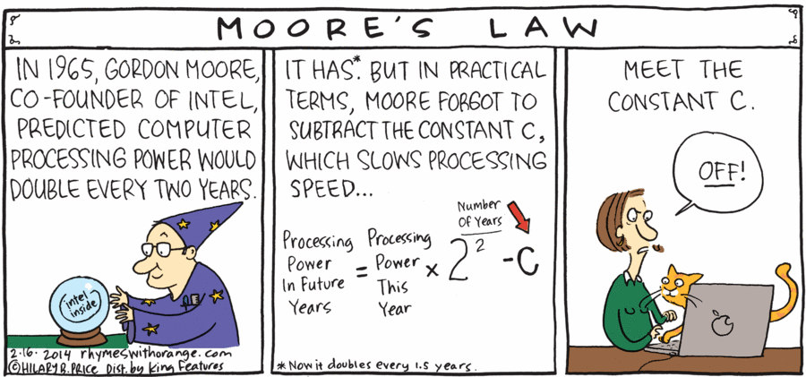
Amdahl’s law on the other hand is a formula that gives the theoretical speedup in latency of the execution of a task at a fixed workload that can be expected of a system whose resources are improved. It states that “the overall performance improvement gained by optimizing a single part of a system is limited by the fraction of time that the improved part is actually used”.
But why that is important? The fact that there are physical limitations and barriers to further expanding/shrinking transistors (both because of the power consumption and speed), makes it important to design effective and efficient hardware that is capable of performing the computation at a higher speed with less transistor consumption. As a simple example, there are multiple types of adders to perform the addition of two operands, and each of them is designed for particular purposes and is good to be used in specific operations like Ripple Carry Adder (RCA), Carry Look-Ahead Adder (CLA), Carry Save Adder (CSA), etc.
Okay, but how do the programmers describe these designs? The answer is, that they use HDL languages to describe the hardware at different levels.
Terms
Before exploring more hardware design concepts, let’s explain a few terms that we use in this article.
FPGA (Field-Programmable Gate Array): FPGAs are versatile hardware devices that can be customized by users after manufacturing, allowing them to reconfigure the chip’s functionality to suit specific tasks or applications.
ASIC (Application-Specific Integrated Circuit): ASICs are specialized integrated circuits designed for a particular application, often offering optimized performance and power efficiency, but they are not reprogrammable like FPGAs.
RTL (Register-Transfer Level): RTL is a hardware description language abstraction that represents the behavior of digital circuits at a level where data movement between registers and the associated logic operations are defined, making it a crucial step in designing hardware.
Netlist: A netlist is a textual or graphical representation of a circuit’s components (gates, flip-flops, etc.) and their interconnections at a lower level than RTL but higher than physical implementation.
Synthesis: Synthesis is the automated process of converting a high-level hardware description into a lower-level netlist for hardware implementation, optimizing for efficiency. A code that can make hardware is called a synthesizable code.
AXI: The AXI (Advanced eXtensible Interface) protocol is a widely used high-performance, on-chip communication protocol designed for efficient data transfer and interconnection of IP (Intellectual Property) blocks in System-on-Chip (SoC) and FPGA designs.
Hardware Description Languages (SystemVerilog, Verilog, VHDL)
Almost all of the hardware designs (like CPUs, RAMs, GPUs, etc.) are (can be) programmed using HDL or Hardware Description Languages. The most amazing thing about HDL languages is that these languages allow you to write programs that do a simple task (AND, OR, XOR, etc.) in a very short and precise slice of time and you can achieve precise control over a multitude of tasks within a fraction of a second!
For example, assume that you want to write a program that adds two operands. Generally in assembly, we use an instruction like ADD and add a value to a register like ADD RAX, 0x55. There are plenty of stages that a processor will follow from fetch and decoding to executing. But in the final step, the values will be added in a very short fraction of time using an adder in the arithmetic logic unit (ALU). Imagine you have a processor/FPGA with a 200 MHz clock cycle speed and each addition of an adder took one cycle to complete. Let’s look at a simple formula:
Number of Clock Cycles = Clock Frequency (Hz) * Time (seconds) Number of Clock Cycles = 200,000,000 Hz * 1 second = 200,000,000 cycles
From the above example, you can see that you would able to perform 200,000,000 additions in one second and you’re sure that it took only one second to complete! You can gain control of this very small and precise fraction of time (1/200,000,000 second) by using HDL programming languages.
There are three famous HDL programming languages: VHDL, Verilog, and SystemVerilog.
Let’s see a very simple example of a VHDL code that toggles a port to zero and one by each clock.
1
2
3
4
5
6
7
8
9
10
11
12
13
14
15
16
17
18
19
20
21
22
23
library IEEE;
use IEEE.STD_LOGIC_1164.ALL;
entity Switch_Control is
Port (
clock : in STD_LOGIC; -- clock input
switch : out STD_LOGIC := '0' -- Initialize switch to OFF (logic low)
);
end Switch_Control;
architecture Behavioral of Switch_Control is
signal toggle : STD_LOGIC := '0'; -- Signal for toggling the switch
begin
process(clock)
begin
if rising_edge(clock) then
toggle <= not toggle; -- Toggle the switch state on rising edge of the clock
end if;
end process;
switch <= toggle; -- Assign the switch state to the output port
end Behavioral;
The above VHDL code defines an input port “clock” and an output port “switch” and inside the architecture block, there’s a process sensitive to the rising edge of the “clock” signal. When the clock signal rises, the “toggle” signal is toggled (inverted).
The above code is also written in Verilog:
1
2
3
4
5
6
7
8
9
10
11
12
13
14
15
16
module Switch_Control (
input wire clock, // Clock input
output reg switch = 0 // Initialize switch to OFF (logic low)
);
reg toggle = 0; // Signal for toggling the switch
always @(posedge clock) begin
toggle <= ~toggle; // Toggle the switch state on rising edge of the clock
end
always @(toggle) begin
switch = toggle; // Assign the switch state to the output port
end
endmodule
This code defines a module named Switch_Control with an input wire clock and an output register switch which is initialized to 0 (logic low). Inside the module, there’s a register named toggle initialized to 0. Effectively, this Verilog module also creates a digital switch that toggles its state on each rising edge of the clock input, and the switch output reflects this state.
The SystemVerilog’s syntax is also (more or less like Verilog) with a couple of differences. Actually, SystemVerilog extends Verilog by adding several new features and enhancements.
As you can see the above codes have one input and one output. The above code can be fabricated into a chip. The imaginary chip contains two pins, one for input and one for output. These pins can be made with different IC package types like DIP, SIP, etc. with different technologies.
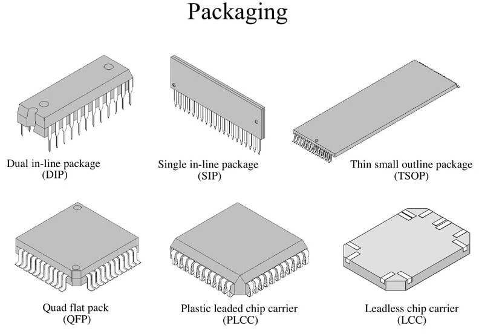
The problem with these HDL languages is that it’s so hard and frustrating to develop hardware with these languages. Even though these languages give the best control over every single part of the hardware, it can be really time-consuming to design simple hardware. Because of these reasons, hardware designers made other languages like Chisel, SystemC, and HLS that deal with higher-levels of abstractions which makes it possible to write less code; thus, speeding up and easing the development.
For now, we have a very basic understanding of HDL languages and how chips are digital chips are designed, now we can follow our journey to the next steps.
Generating Hardware Using Chisel
Personally, I have to admit that the Chisel language is one of the most exciting languages that I’ve ever dealt with. I really love the way they engineered a functional programming language like Scala and made a hardware generator language. The Constructing Hardware in a Scala Embedded Language (Chisel) is an open-source hardware description language (HDL) used to describe digital electronics and circuits at the register-transfer level (RTL). Think of it as a language that creates Verilog (or SystemVerilog) codes from the Scala codes. Later you can use the generated Verilog files to synthesize and program FPGAs or fabricate them in ASIC designs.
Chisel adds hardware construction primitives to the Scala programming language, providing designers with the power of a modern programming language to write complex, parameterizable circuit generators that produce synthesizable Verilog.
There are plenty of resources to start learning Chisel and it’s a large-scale project that is actively maintained by CHIPS Alliance and it’s used for huge projects like Rocket Chip Generator.
Let’s see a very simple example of a Chisel code:
1
2
3
4
5
6
7
8
9
10
11
12
13
14
15
16
17
18
19
20
21
22
23
24
25
26
import chisel3._
import chisel3.util.Counter
import circt.stage.ChiselStage
class Blinky(freq: Int, startOn: Boolean = false) extends Module {
val io = IO(new Bundle {
val led0 = Output(Bool())
})
// Blink LED every second using Chisel built-in util.Counter
val led = RegInit(startOn.B)
val (_, counterWrap) = Counter(true.B, freq / 2)
when(counterWrap) {
led := ~led
}
io.led0 := led
}
object Main extends App {
// These lines generate the Verilog output
println(
ChiselStage.emitSystemVerilog(
new Blinky(1000),
firtoolOpts = Array("-disable-all-randomization", "-strip-debug-info")
)
)
}
This Chisel code snippet is for a digital circuit that blinks an LED at a specified frequency. Defines a Chisel module named Blinky with a parameter for the frequency and an optional parameter for the initial LED state. Inside the module, it declares an output port led0 of type Bool to drive an LED. The LED state is stored in a register named led and initialized with the value provided in the startOn parameter. When the counter wraps around, it toggles the led state.
In digital designs, the clock signal is the perception of time and it’s used for synchronizing different parts of the chips. As you can see in the above code, it’s a simple LED blinker and as you can see, there is an output signal named led0. But did you notice that it didn’t specify any inputs? How can we make a blinker without knowing or being notified about the time (or more precisely without any perception of the clock signal)?
The answer to this question lies in the fact that in languages like Chisel, the clock signal is masked and handled by the Chisel and it’s not exported (revealed) to the hardware designer. In other words, the generated Verilog files from the above code actually contain the clock signal (and a reset signal). But it’s actually handled by the Chisel instead of the programmer. Let’s see the generated code from the above Chisel code.
1
2
3
4
5
6
7
8
9
10
11
12
13
14
15
16
17
18
19
20
21
22
23
24
module Blinky(
input clock,
reset,
output io_led0
);
reg led;
reg [8:0] counterWrap_c_value;
always @(posedge clock) begin
if (reset) begin
led <= 1'h0;
counterWrap_c_value <= 9'h0;
end
else begin
automatic logic counterWrap = counterWrap_c_value == 9'h1F3;
led <= counterWrap ^ led;
if (counterWrap)
counterWrap_c_value <= 9'h0;
else
counterWrap_c_value <= counterWrap_c_value + 9'h1;
end
end // always @(posedge)
assign io_led0 = led;
endmodule
As you can see, there is actually a clock and a reset signal in addition to the io_led0 output. Using Chisel, you have less control over the hardware compared to writing codes in Verilog or VHDL, but still, you have the benefit of using a high-level language like Scala (Java). Moreover, you have the ability to integrate Verilog codes into the Chisel designs and write some parts of the codes in Chisel while using Verilog for remaining parts.
C/C++ in Hardware Design
When we talk about C/C++ in hardware design, we have to consider two different paradigms.
The first approach is using C/C++ codes to program FPGA. Modern FPGAs like the Xilinx ZYNQ series come with two different units, the processing system (PS), and the FPGA programmable logic (PL). The PS part is usually an ARM processor that is connected directly to the PL parts (e.g., through AXI interface). So, you can write specific C/C++ codes compile them for a regular ARM processor, and use it in the FPGA. Usually, it’s super hard if someone wants to implement all protocols (e.g., network protocols, etc.) using the PL part. In these cases, hardware programmers make PL designs that are mainly responsible for running the computational part of a program and finally send the results back to the ARM processor and this ARM processor is responsible for synchronizing or sending/receiving data over the network. You can think of a dozen of examples how this PS part might be useful once it’s connected to the PL part. If you’re interested in this topic, you can see this tutorial as it covers a lot of exciting applications of using PL and PS together.
The second approach is using C/C++ codes to design hardware or generate RTL codes. As an example, we can use Vitis HLS to generate RTL codes. High-level synthesis (HLS) is an automated design method. It starts with a high-level description of how a digital system should behave and then automatically generates the detailed hardware structure that makes that behavior possible at the register-transfer level.
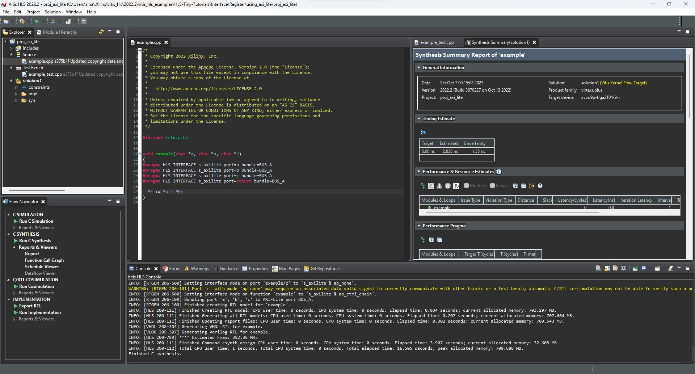
Vitis HLS
Let’s run a simple HLS example using Xilinx Vitis. Before that, here’s a top view of how HLS works:
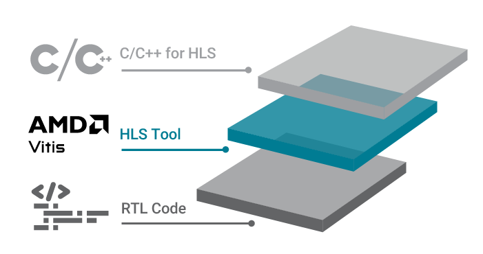
For example, we run a simple AXI lite connection interface using HLS (from the Vitis example codes).
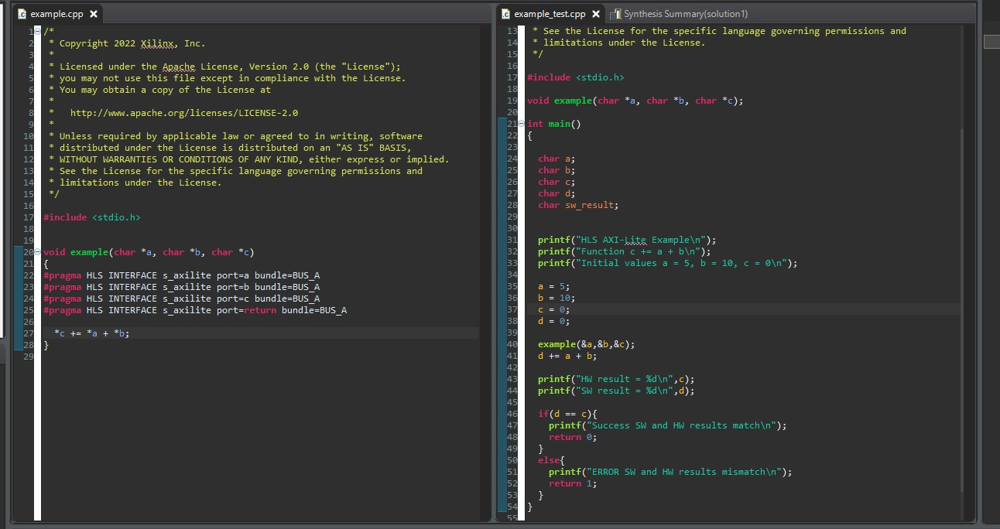
There are three main phases, C Synthesis, C/RTL Cosimulation, and Implementation. In the first phase, the Vitis synthesizer tries to interpret the C codes, after that, we can write codes for testing our design and finally, the RTL generated code (both in Verilog and VHDL format) is ready!
Here are the generated/exported AXI lite codes by Vitis HLS, and this is VHDL files and Verilog files of our design.
Simulating Codes
Once you finished writing your HDL codes or generating HDL codes from the Chisel (Scala) generator, it’s time to test the code using a simulator. The simulator works like a debugger and it’s an environment to simulate the hardware behavior to test whether the designed logic works properly or contains error. First, let’s simulate HDL codes.
Simulating HDL Code Using GTKWave or ModelSim
For simulating and testing VHDL and Verilog codes, we need to write a testbench. A testbench in Verilog, or VHDL is a file that is used exclusively for simulation, it’s a piece of non-synthesizable code that tries to simulate signals (input/output) to the designed logic, so you can see how your design behaves on different signals and inputs and what would be the final output.
For example, for the above toggle VHDL code, we write the following testbench:
1
2
3
4
5
6
7
8
9
10
11
12
13
14
15
16
17
18
19
20
21
22
23
24
25
26
27
28
29
30
31
library IEEE;
use IEEE.STD_LOGIC_1164.ALL;
use IEEE.STD_LOGIC_ARITH.ALL;
use IEEE.STD_LOGIC_UNSIGNED.ALL;
entity Switch_Control_tb is
end Switch_Control_tb;
architecture testbench of Switch_Control_tb is
-- Signals for testbench
signal clock_tb : STD_LOGIC := '0'; -- Testbench clock signal
signal switch_tb : STD_LOGIC; -- Testbench switch signal
begin
-- Instantiate the Switch_Control DUT
DUT: entity work.Switch_Control
port map (
clock => clock_tb,
switch => switch_tb
);
-- Clock generation process (generates a clock signal)
process
begin
while true loop
clock_tb <= not clock_tb; -- Toggle the clock
wait for 5 ns; -- Clock period (adjust as needed)
end loop;
end process;
end testbench;
This VHDL testbench creates a clock signal and connects it to the Switch_Control while monitoring the output signal switch_tb to observe the behavior of the chip during simulation.
The Verilog version of the testbench is available here.
Now it’s time to test our testbench.
Probably the most famous tool for testing HDL codes is ModelSim. There are also other tools like internal Vivado simulator (previously named isim) or GTKWave but in my opinion, ModelSim is better as it offers more functionalities along with a powerful scripting capability. Moreover, you don’t have to necessarily install Vivado to use ModelSim. You can just install ModelSim and test (simulate) your code.
The following picture is the simulation signal of the above testbench using ModelSim:
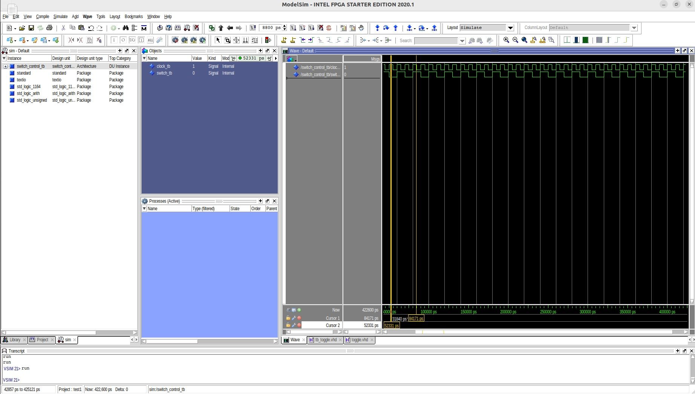
And this is the simulation result of the Vivado’s internal simulator:

Keep in mind that, what you will see in the simulator environment might not necessarily behave the same once it is fabricated as a chip or is programmed into an FPGA, so there are different pre- and post-synthesis simulations plus plenty of other physical and electrical considerations that might affect the behavior of the circuit, but it usually reflects the correct behavior of what you can expect from a circuit and you can find possible design errors. By the way, it’s a program that simulates the circuit, not a physical circuit!
Testing Codes in Chisel
Chisel is based on Scala and as it’s a high-level programming language, it gives you unlimited power of testing and writing testbenches. For example, imagine you write a code that is designing an arithmetic unit for a processor. You can generate dozens of random numbers and statements, write some Scala (or even Java) codes to compute a formula or an expression, and then provide these random values to your designed circuit, and compare the output of your circuit with the results of the formula.
1
2
3
4
5
6
7
8
9
10
11
12
13
14
15
16
17
18
19
20
21
22
23
24
25
26
27
28
29
30
31
32
33
34
35
36
37
38
39
40
41
42
43
44
45
46
47
import chisel3._
import chisel3.util._
import chiseltest._
import org.scalatest.flatspec.AnyFlatSpec
import scala.util.control.Breaks._
class ToggleTest extends AnyFlatSpec with ChiselScalatestTester {
"DUT" should "pass" in {
test(
new Toggle(
//
// Arugments to parameterize the chisel designs
//
)
) { dut =>
// First, set an input called "start" to 0
dut.io.start.poke(0.U)
// Run the circuit for one-clock
dut.clock.step(1)
// Perform the first test
val test1 = Integer.parseInt(TestingSample.SampleFormulaFunctions(1, 2).U
// Set the start to 1
dut.io.start.poke(1.U)
// Set an input called "in1" to the test1 value
dut.io.in1.poke(test1)
// Run the circuit for one-clock
dut.clock.step(1)
// Check the output from "out1" with a value like 0
if (dut.io.out1.peek().litValue.toInt == 0) {
print("[*] Successful\n");
} else {
print("[x] NOT successful!\n");
}
// Remove the start bit again (disable chip)
dut.io.start.poke(0.U)
}
}
}
This is a Chisel testbench to test a Chisel circuit with specific input conditions and check the output to determine if the circuit behaves as expected.
Initially, the start input is set to 0 using poke. The circuit is advanced by one clock cycle using dut.clock.step(1). Then, a test value is calculated using a function named TestingSample.SampleFormulaFunctions(1, 2) and converted to an integer. The start input is set to 1 to enable the circuit. The in1 input is set to the previously calculated test value using poke. The circuit is advanced by one clock cycle again. Finally, the output from out1 is checked. If it matches the expected value (0), it prints [*] Successful, otherwise [x] NOT successful!.
After that, you can run your test by using sbt, and it will make a .vcd file. The VCD file is passed as an input to the GTKWave and you can see different signals and what happens in each clock cycle and the final outputs. Of course, the results can be automatically tested with Scala but if you want to debug and find possible errors, you can see the signal waves.
If you want to use ModelSim with Chisel, I made an automated Python script to make necessary conversions between different formats and make Chisel results compatible with ModelSim, you can find it here, it also describes how you can use it.
Testing HDL Codes Using Verilator
Up until now, we have seen how to make HDL designs and we used Chisel to generate Verilog codes. We also see how we can test the HDL and Chisel codes. Now we encounter another problem and it’s speed. Testing complicated and big projects is time-consuming, we already wrote a very simple testbench but in reality, when we encounter a big project, it would take a lot of time to simulate a circuit. In order to solve this issue, hardware designers came across the idea of converting the simulation Verilog codes into C++ and compiling the simulation codes. Now, instead of interpreting codes and generating waves, everything was running directly in an executable binary file, you can assume it is like a Verilog code that is converted to C++ code but the generated C++ code is designed based on how integrated circuits work.

The tool that is responsible for this conversion is Verilator and this conversion is called “verilate”. It verilates the specified Verilog or SystemVerilog code by reading it, performing lint checks, and optionally inserting assertion checks and coverage-analysis points. It outputs single- or multithreaded .cpp and .h files, the “Verilated” code.
For the demonstration, I verilated the toggle code that we wrote previously, you can see the generated CPP files here.
There is also a very good tutorial if you want to start learning verilator. You can also use Verilator directly with Chisel codes.
Now that we test our designed logic, it’s time to either implement the codes in FPGAs or fabricate them into chips.
Synthesising HDL Codes
Once we successfully pass the tests and simulate logic, it’s time to synthesize codes. There are two major FPGA vendors that design and fabricate FPGAs Xilinx (acquired by AMD) and Intel FPGAs (previously Altera). These two giant companies provide different tools for programming their FPGAs. Altera made Quartus while Xilinx offers Vivado. In this blog post, we use Vivado as the main tool.
Usually, the designs that are made for FPGAs are different from the ASICs. For example, there are plenty of considerations that make a Verilog design FPGA-efficient or ASIC-efficient. Most of the time, those codes that are generated for FPGAs use FPGA components like Block RAM (more about it later) or use FPGA IPs that make the code only synthesizable for FPGAs. The same is also true about ASIC design. Some designs might not be suitable for FPGAs and need to be fabricated in ASIC chips.
Programming Xilinx FPGAs Using Vivado
We can use the Vivado Design Suite to synthesize the Verilog code that we previously wrote and finally generate a bitstream file that can program an FPGA.
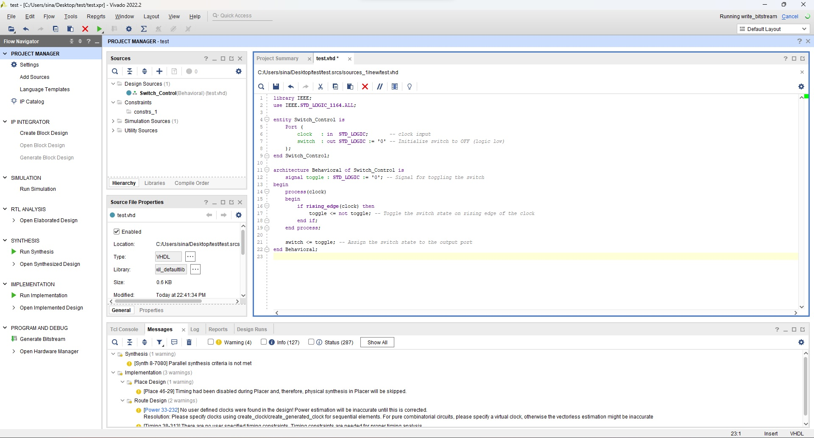
Another essential step for Vivado is I/O pin planning and we can connect the clock source to our design ports or connect I/O pins (e.g., a key, LED, AXI, SPI pins, etc.). It finally produces a design constraints file (XDC file) that will guide Vivado through routing the FPGA pins.

For example, this is an XDC file that is used for connecting clock signals as well as some VGA I/O ports to FPGA pins.
1
2
3
4
5
6
7
8
set_property PACKAGE_PIN F22 [get_ports reset]
set_property IOSTANDARD LVCMOS33 [get_ports sys_clock]
set_property PACKAGE_PIN AB19 [get_ports {VGA_B[3]}]
set_property PACKAGE_PIN AB20 [get_ports {VGA_B[2]}]
set_property PACKAGE_PIN Y20 [get_ports {VGA_B[1]}]
set_property PACKAGE_PIN Y21 [get_ports {VGA_B[0]}]
set_property PACKAGE_PIN AA21 [get_ports {VGA_G[3]}]
...
Finally, it elaborates the code, makes schematic files, and generates bitstreams. Here is the schematic view generated for our toggle example.
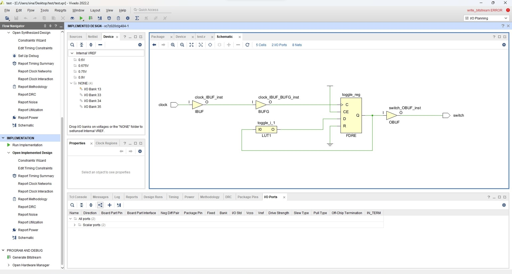
The schematic file of the above design is available here.
Vivado Netlists
Before making the bitstream file needed for programming FPGA, the codes are converted to a lower abstraction level called netlist which is basically specific to the target FPGA components and contains the necessary components along with their interconnection to implement the actual designed logic and satisfy the design requirements.
For example, assume the very first examples (Verilog code) that we made for toggling switches. We could use the following TCL commands (Vivado command-line) to generate Verilog and VHDL functional simulation netlist:
For generating Verilog netlists:
1
write_verilog -mode funcsim Verilog_Netlist_Toggle.v
For generating VHDL netlists:
1
write_vhdl -mode funcsim VHDL_Netlist_Toggle.vhd
The final netlist is a new Verilog file (netlist file):
1
2
3
4
5
6
7
8
9
10
11
12
13
14
15
16
17
18
19
20
21
22
23
24
25
26
27
28
29
30
31
32
33
34
35
36
37
38
39
40
41
42
43
44
45
46
47
48
49
50
51
52
53
54
55
56
57
58
59
60
61
62
63
64
65
66
67
68
69
70
71
72
73
74
75
76
77
78
79
80
81
82
83
84
85
86
87
88
89
90
91
92
93
94
95
96
97
98
99
100
101
102
103
104
105
106
107
108
109
110
111
112
113
114
115
116
117
118
119
120
121
122
123
124
125
126
127
128
129
130
131
132
133
134
135
136
// Copyright 1986-2022 Xilinx, Inc. All Rights Reserved.
// --------------------------------------------------------------------------------
// Tool Version: Vivado v.2022.2 (win64) Build 3671981 Fri Oct 14 05:00:03 MDT 2022
// Date : Thu Oct 5 21:13:49 2023
// Host : DESKTOP-J3QO9T8 running 64-bit major release (build 9200)
// Command : write_verilog -mode funcsim Verilog_Netlist_Name.v
// Design : Switch_Control
// Purpose : This verilog netlist is a functional simulation representation of the design and should not be modified
// or synthesized. This netlist cannot be used for SDF annotated simulation.
// Device : xc7z020clg484-1
// --------------------------------------------------------------------------------
`timescale 1 ps / 1 ps
(* NotValidForBitStream *)
module Switch_Control
(clock,
switch);
input clock;
output switch;
wire clock;
wire clock_IBUF;
wire clock_IBUF_BUFG;
wire p_0_in;
wire switch;
wire switch_OBUF;
BUFG clock_IBUF_BUFG_inst
(.I(clock_IBUF),
.O(clock_IBUF_BUFG));
IBUF #(
.CCIO_EN("TRUE"))
clock_IBUF_inst
(.I(clock),
.O(clock_IBUF));
OBUF switch_OBUF_inst
(.I(switch_OBUF),
.O(switch));
LUT1 #(
.INIT(2'h1))
toggle_i_1
(.I0(switch_OBUF),
.O(p_0_in));
FDRE #(
.INIT(1'b0))
toggle_reg
(.C(clock_IBUF_BUFG),
.CE(1'b1),
.D(p_0_in),
.Q(switch_OBUF),
.R(1'b0));
endmodule
`ifndef GLBL
`define GLBL
`timescale 1 ps / 1 ps
module glbl ();
parameter ROC_WIDTH = 100000;
parameter TOC_WIDTH = 0;
parameter GRES_WIDTH = 10000;
parameter GRES_START = 10000;
//-------- STARTUP Globals --------------
wire GSR;
wire GTS;
wire GWE;
wire PRLD;
wire GRESTORE;
tri1 p_up_tmp;
tri (weak1, strong0) PLL_LOCKG = p_up_tmp;
wire PROGB_GLBL;
wire CCLKO_GLBL;
wire FCSBO_GLBL;
wire [3:0] DO_GLBL;
wire [3:0] DI_GLBL;
reg GSR_int;
reg GTS_int;
reg PRLD_int;
reg GRESTORE_int;
//-------- JTAG Globals --------------
wire JTAG_TDO_GLBL;
wire JTAG_TCK_GLBL;
wire JTAG_TDI_GLBL;
wire JTAG_TMS_GLBL;
wire JTAG_TRST_GLBL;
reg JTAG_CAPTURE_GLBL;
reg JTAG_RESET_GLBL;
reg JTAG_SHIFT_GLBL;
reg JTAG_UPDATE_GLBL;
reg JTAG_RUNTEST_GLBL;
reg JTAG_SEL1_GLBL = 0;
reg JTAG_SEL2_GLBL = 0 ;
reg JTAG_SEL3_GLBL = 0;
reg JTAG_SEL4_GLBL = 0;
reg JTAG_USER_TDO1_GLBL = 1'bz;
reg JTAG_USER_TDO2_GLBL = 1'bz;
reg JTAG_USER_TDO3_GLBL = 1'bz;
reg JTAG_USER_TDO4_GLBL = 1'bz;
assign (strong1, weak0) GSR = GSR_int;
assign (strong1, weak0) GTS = GTS_int;
assign (weak1, weak0) PRLD = PRLD_int;
assign (strong1, weak0) GRESTORE = GRESTORE_int;
initial begin
GSR_int = 1'b1;
PRLD_int = 1'b1;
#(ROC_WIDTH)
GSR_int = 1'b0;
PRLD_int = 1'b0;
end
initial begin
GTS_int = 1'b1;
#(TOC_WIDTH)
GTS_int = 1'b0;
end
initial begin
GRESTORE_int = 1'b0;
#(GRES_START);
GRESTORE_int = 1'b1;
#(GRES_WIDTH);
GRESTORE_int = 1'b0;
end
endmodule
`endif
The generated netlist in VHDL format is also available here. As you can see, these generated HDL netlists are elaborated in different abstraction levels and it’s quite challenging to understand the intent of this code. Even though they’re basically the same as the codes that we wrote for toggling output and do the exact same operation, but this is the eventual code that will be programmed in the FPGA.
Fortunately, there are tools that can be used for reverse engineering netlists (more about it later).
The Memory
One of the fundamental components of chips is Static Random Access Memory (SRAM). You probably saw that Intel processors with more cache are offered at higher prices. The reason for that is that they need to chain the different numbers of flip-flops to form the cache. These chains of flip-flops are SRAMs and can be accessed immediately without any waiting clocks.
Static RAM (SRAM) consists of flip-flops, a bistable circuit composed of four to six transistors. Once a flip-flop stores a bit, it keeps that value until the opposite value is stored in it. SRAM gives fast access to data (immediate), but it is physically relatively large. Even though SRAMs are perfect for designing memory, these components are relatively expensive. That’s why other types of RAMs (like DRAMs) are used in computers.
Now let’s talk about different types of memories used in FPGAs and ASIC design.
Distributed RAMs in FPGAs
In FPGAs, there are Block RAMs (BRAMs) and distributed RAMs. Distributed RAM is made up of LUTs and is used when the size of memory is small. For instance, in your code, you have a memory with a depth of 64 and a word size of 32. This one will be inferred into Distributed RAM, not BRAM.
Let’s define a memory in VHDL:
1
2
type ram_type is array (0 to 3) of STD_LOGIC_VECTOR(7 downto 0);
signal ram: ram_type := (others => "00000000");
The above code defines an array type with four elements, indexed from 0 to 3. Each element of this array is a STD_LOGIC_VECTOR type, which represents an array of bits. In this case, each element is an 8-bit wide STD_LOGIC_VECTOR (ranging from bit 7 to bit 0), effectively creating a 4x8-bit memory structure. The FPGA will infer it as a distributed RAM, not Block RAM (BRAM) because the size is relatively small.
Block RAM (BRAM) in FPGAs
Block RAM (or BRAM) stands for Block Random Access Memory and is used for storing large amounts of data inside of your FPGA. BRAMs are usually external or embedded chips in the FPGA. For example, the following chip is the external design (port map) of a 36-KB BRAM used in Xilinx FPGAs.
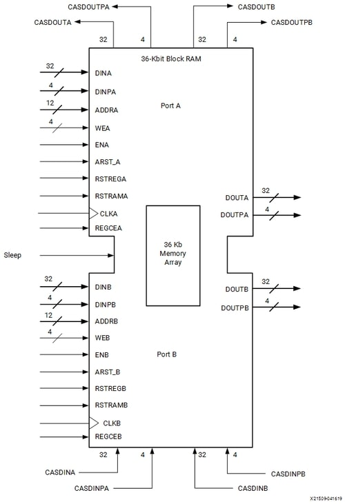
The delay for these BRAM components are 1-clock cycle means that if you want to access data bits in BRAMs, you have to request from the BRAM chip and it will be available at the rising edge of the next clock cycle.
Usually, FPGAs have different formats of codes for inferring Block RAMs. For example, the following Verilog code is used for inferring BRAMs in Xilinx FPGAs where you can initialize it with particular data bits specified in the file.
1
2
3
4
5
6
7
8
9
10
11
12
13
14
15
16
17
18
19
20
module rams_init_file (clk, we, addr, din, dout);
input clk;
input we;
input [5:0] addr;
input [31:0] din;
output [31:0] dout;
reg [31:0] ram [0:63];
reg [31:0] dout;
initial begin
$readmemb("rams_init_file.data",ram);
end
always @(posedge clk)
begin
if (we)
ram[addr] <= din;
dout <= ram[addr];
end endmodule
This Verilog module, rams_init_file, represents a simple RAM with a read initialization from a memory file. It responds to clock edges and writes to enable signals to update and read data from its memory array. Once you use the above code in Vivado, it automatically infers Block RAM (BRAM).
You can even initialize it with custom values.
1
2
3
4
5
6
7
8
9
10
11
12
13
14
15
16
17
18
19
20
21
22
23
24
25
26
27
28
29
30
31
32
33
34
35
36
37
38
39
library ieee;
use ieee.std_logic_1164.all;
use ieee.numeric_std.all;
entity rams_sp_rom is
port(
clk : in std_logic;
we : in std_logic;
addr : in std_logic_vector(5 downto 0);
di : in std_logic_vector(19 downto 0);
do : out std_logic_vector(19 downto 0)
);
end rams_sp_rom;
architecture syn of rams_sp_rom is
type ram_type is array (63 downto 0) of std_logic_vector(19 downto 0);
signal RAM : ram_type := (X"0200A", X"00300", X"08101", X"04000", X"08601", X"0233A",
X"00300", X"08602", X"02310", X"0203B", X"08300", X"04002",
X"08201", X"00500", X"04001", X"02500", X"00340", X"00241",
X"04002", X"08300", X"08201", X"00500", X"08101", X"00602",
X"04003", X"0241E", X"00301", X"00102", X"02122", X"02021",
X"00301", X"00102", X"02222", X"04001", X"00342", X"0232B",
X"00900", X"00302", X"00102", X"04002", X"00900", X"08201",
X"02023", X"00303", X"02433", X"00301", X"04004", X"00301",
X"00102", X"02137", X"02036", X"00301", X"00102", X"02237",
X"04004", X"00304", X"04040", X"02500", X"02500", X"02500",
X"0030D", X"02341", X"08201", X"0400D");
begin
process(clk)
begin
if rising_edge(clk) then
if we = '1' then
RAM(to_integer(unsigned(addr))) <= di;
end if;
do <= RAM(to_integer(unsigned(addr)));
end if;
end process;
end syn;
This Block RAM (BRAM) is a Verilog module called rams_sp_rom representing a simple synchronous read-only memory (ROM) with a 64-entry memory array. It has a clock input clk, write enable input we, address input addr, data input di, and data output do. On each rising clock edge, it either writes data to the ROM if we is high or reads data from the ROM based on the provided address, updating the do output accordingly. The memory content is initialized with preset values in the RAM signal. Same as above, Vivado infers a BRAM for the above code.
As you can see, you can write HDL codes to READ/WRITE into the Block RAM memory. You can even create Read-Only Memory (ROM) by removing the modification (write) logic. Keep in mind that the logic of the Block RAM itself is also written with HDL codes, so it’s like using another HDL module with this difference that the Block RAMs are previously fabricated and physically available into the chips.
Static RAM (SRAM) in ASIC
There is no Block RAM (BRAM) in ASIC designs. If you want to implement a block RAM (BRAM) into an ASIC chip, you have to implement it or use custom tools for creating and simulating RAMs. One of these tools is OpenRAM. OpenRAM is an open-source framework to create the layout, netlists, timing and power models, placement and routing models, and other views necessary to use SRAMs in ASIC design.
You can configure the OpenRAM and it will create different outputs from Verilog files to GDS files that can be used for fabricating SRAMs. Finally, it gives you the necessary files that are suitable for your custom technology (45 nm, 40 nm, etc.).
Elaborating ASIC Designs
Once the implementation of hardware (usually in HDL languages) is done, it’s time to use special tools to implement them into actual transistors. This task can be done with (usually commercial, expensive, and complicated) tools like Synopsys Design Compiler. These tools try to optimize designs for timing, area, power, and test and finally generate designs that can be fabricated and implemented into chips.
Other than the commercial tools, there are open-source equivalent tools like Yosys that are able to synthesize and design Verilog codes.
Building Hardware Layout (GDSII)
Once you’ve done designing your hardware, it’s time to make it ready for fabrication. This time, the GDSII format is used to create a layout available to be used and fabricated in the industry. GDSII is an industry-standard database file format that is used to exchange data on IC layout artwork. It is a binary file format representing planar geometric shapes, text labels, and other information about the layout in hierarchical form.
Once you created your final Verilog files, you can use different tools to create a standard GDSII format. As an example, the open-source OpenROAD-Project’s OpenLane can be used that perform all ASIC implementation steps from RTL all the way down to GDSII.
As an example, I used the Blinky Verilog code that we generated by Chisel as an input for OpenLange and this is the picture of a chip that I made by using this project:

If you want to zoom into the picture, the SVG version of this file is available here.
{kind=link}
This was the last step and we explored our journey from HDL codes to creating hardware using GDSII. Of course, there are plenty of other steps and industry considerations at this point that should be done before making the actual chip, but I think you’ve got a very high-level idea of how chips are made.
Before wrapping up, let’s explore one more step, reverse engineering of netlists!
Reverse Engineering Netlists
If you remember from the previous sections where we explored the netlists of Vivado, you probably noticed that the netlists are mostly hard to understand. Fortunately, there are tools to help us with analyzing netlists and one of them is called HAL (or The Hardware Analyzer). As they mentioned in the git repo, their vision is that HAL becomes the hardware reverse-engineering equivalent of tools like IDA or Ghidra.
From the main descriptions: virtually all available research on netlist analysis operates on a graph-based representation of the netlist under inspection. At its core, HAL provides exactly that: A framework to parse netlists of arbitrary sources, e.g., FPGAs or ASICs, into a graph-based netlist representation and to provide the necessary built-in tools for traversal and analysis of the included gates and nets.
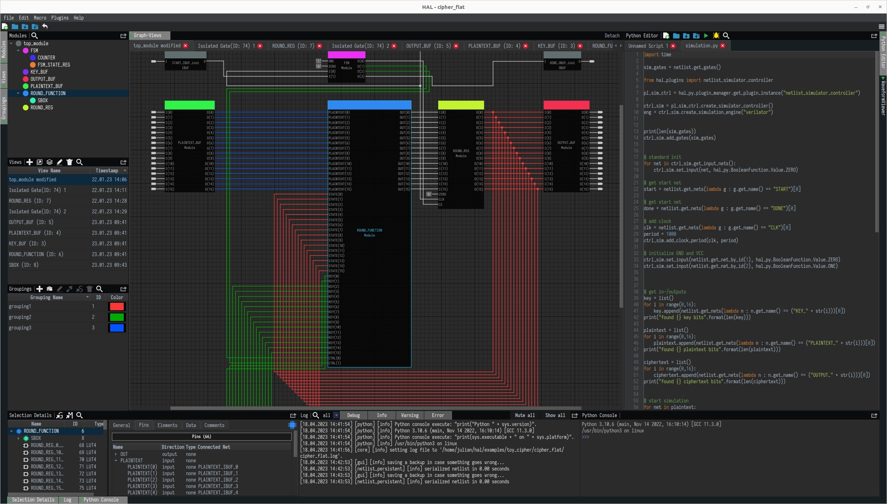
We can use HAL to analyze the netlist codes generated by Vivado from the previous step. First, we need to build HAL and then import the netlist file. As you can see, it visualizes the netlist view of the chips along with their input and output ports and shows the arithmetic logic behind each element (flip-flops, LUTs, Boolean Function) in the netlist. We could also use Python codes to further elaborate the netlist.
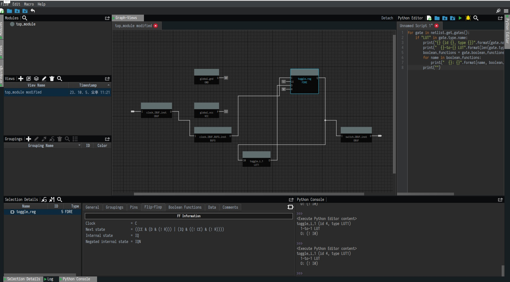
One other interesting feature of HAL is its Netlist Simulator and Waveform Viewer. This tool is also able to create automated waves for the target netlist and enables the reverse engineer to simulate selected parts of the netlist in a cycle-accurate fashion.
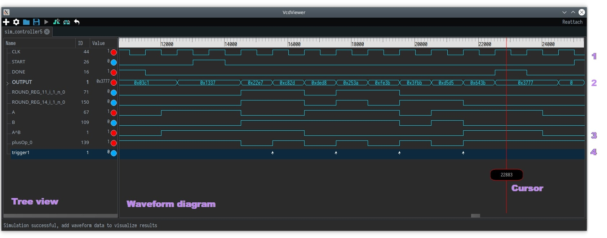
Now, what if we don’t have access to the netlist files? Or if the netlist is too complex to be interpreted? Can we physically perform the reverse engineering tasks? The answer to this question is yes!
Sometimes even getting your hands on a netlist file is a hard task. In such cases, prior to reverse engineering the circuit’s netlist, an adversary will be needed to reproduce the internal netlist of the target IC. This has been a great challenge in terms of IP/IC cloning and piracy. Once the attacker gets his hand on an optical microscope, he can prepare depackaging the IC using corrosive chemicals, then delayering individual layers (metal, poly, or diffusion) using corrosive chemicals. Finally Imaging the top-view of each layer using an optical microscope or single electron microscope (SEM). The image may contain metal routing, contacts, vias, and pins in that layer.
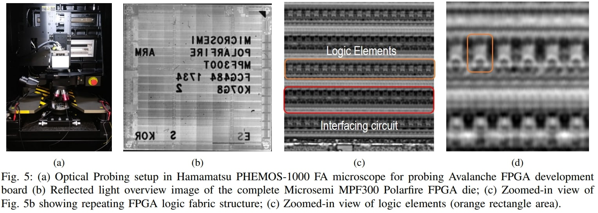 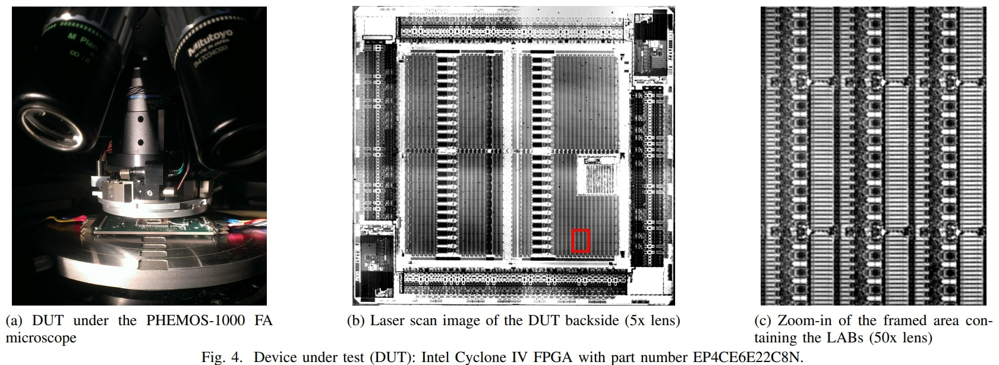
Furthermore, annotation aligns and stitches the images of different layers could be carried out to extract gate-level netlist from the annotated images.
To mitigate such reverse engineering there have been a number of methods including gate camouflages, dummy contacts, netlist obfuscation, logic locking and so on. Some methods are shown below:
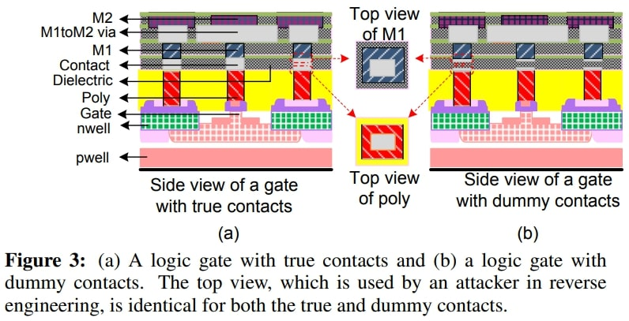
Nevertheless, similar invasive methods like this and this could be used to get information from the hardware imaging and eventually complete reverse engineering.
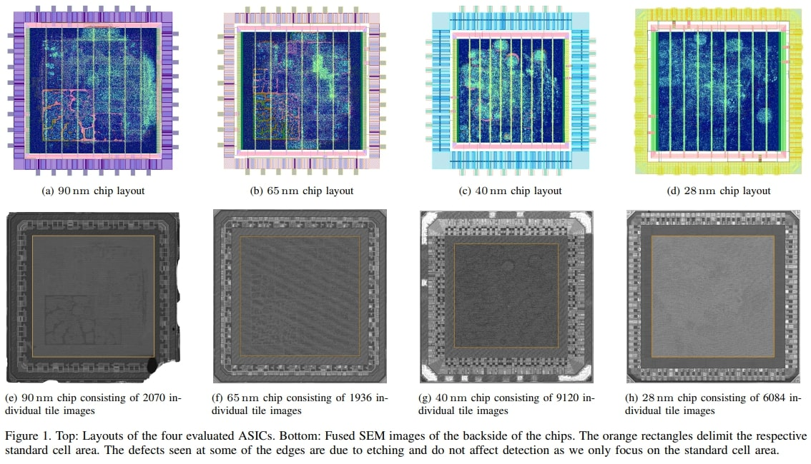
Conclusion
This was a very basic introduction to the digital and hardware design world and most of the introduced tools are either open-source or publicly available, however, you should keep in mind that most of the big computer maker companies probably have their own approaches to generating hardware along with their proprietary tools, so it might not reflect how the actual hardware is made in a big tech company but sure it will give you an idea of the capabilities of the hardware design and how these hardware devices can be made.
In wrapping up our exploration of hardware design, we’ve taken a journey into the world of silicon. From the incredible advancements driven by Moore’s Law to the high-level and low-level description of hardware chips using different languages like VHDL, Verilog, and Chisel, testing hardware descriptions using tools like ModelSim, Verilator, and making design layouts ready to be fabricated using OpenLane or programming FPGA’s using Vivado. Whether you’re a seasoned expert or a newcomer to the field, hardware design continues to be an awesome adventure, where innovation and curiosity work hand in hand to shape the future of computing.
I hope you enjoyed this blog post and I will try to make more content about chip design in the future. Make sure to use the comment section below to discuss this article and see you at the next blog posts!
References
[1] Jensen Huang Tells the Media That Moore’s Law is Dead (The featured image) - (https://www.techpowerup.com/299159/jensen-huang-tells-the-media-that-moores-law-is-dead)
[2] 3 nm process - (https://en.wikipedia.org/wiki/3_nm_process)
[3] Moore’s law - (https://en.wikipedia.org/wiki/Moore%27s_law)
[4] Amdahl’s law - (https://en.wikipedia.org/wiki/Amdahl%27s_law)
[5] Comparison among Different Adders - (https://www.iosrjournals.org/iosr-jvlsi/papers/vol5-issue6/Version-1/A05610106.pdf)
[6] Difference between Verilog and SystemVerilog - (https://www.geeksforgeeks.org/difference-between-verilog-and-systemverilog/)
[7] Verilog Example Codes - (https://verificationguide.com/verilog-examples/)
[8] “Light, Thin, Short and Small”, The Development of Semiconductor Packages - (https://news.skhynix.com/light-thin-short-and-small-the-development-of-semiconductor-packages/)
[9] IC packages - (https://colegiogradual.com.br/pt/plastic-leaded-chip-carrier-plcc-pllc-dummy-component-rr-z1Qd8ysk)
[10] OpenROAD-Project’s OpenLane - (https://github.com/The-OpenROAD-Project/OpenLane)
[11] HAL – The Hardware Analyzer - (https://github.com/emsec/hal)
[12] An open-source static random access memory (SRAM) compiler - (https://github.com/VLSIDA/OpenRAM/)
[13] flip-flop - (https://www.britannica.com/technology/flip-flop)
[14] What is a Block RAM (BRAM) in an FPGA? Tutorial for beginners - (https://nandland.com/lesson-15-what-is-a-block-ram-bram/)
[15] Block RAM - (https://docs.xilinx.com/r/en-US/am007-versal-memory/Data-Flow)
[16] Initializing Block RAM From an External Data File (VHDL) - (https://docs.xilinx.com/r/en-US/ug901-vivado-synthesis/Initializing-Block-RAM-From-an-External-Data-File-Verilog)
[17] OpenRAM results - (https://github.com/VLSIDA/OpenRAM/blob/stable/docs/source/results.md)
[18] Chisel: A Modern Hardware Design Language - (https://github.com/chipsalliance/chisel)
[19] 6.11. Incorporating Verilog Blocks - (https://chipyard.readthedocs.io/en/stable/Customization/Incorporating-Verilog-Blocks.html)
[20] Design Compiler - (https://www.synopsys.com/implementation-and-signoff/rtl-synthesis-test/dc-ultra.html)
[21] Generating a Netlist - (https://docs.xilinx.com/r/en-US/ug900-vivado-logic-simulation/Working-with-Simulation-Sets)
[22] ModelSim-Intel FPGAs Standard Edition Software Version 18.1 - (https://www.intel.com/content/www/us/en/software-kit/750368/modelsim-intel-fpgas-standard-edition-software-version-18-1.html)
[23] Netlist Simulator and Waveform Viewer - (https://github.com/emsec/hal/wiki/Netlist-Simulator-and-Waveform-Viewer)
[24] Writing Test Benches - (https://alchitry.com/writing-test-benches-verilog)
[25] chiseltest - (https://github.com/ucb-bar/chiseltest/blob/main/README.md)
[26] Chisel3 Testing Cheat Sheet - (https://inst.eecs.berkeley.edu/~cs250/sp17/handouts/chisel-testercheatsheet.pdf)
[27] Chisel Testing Intensive (Beginner Track) - Chisel Community Conference 2018 - (https://www.youtube.com/watch?v=yYosPQ9RI4I&ab_channel=Chisel)
[28] Verilator, the fastest Verilog/SystemVerilog simulator - (https://www.veripool.org/verilator/)
[29] High-level synthesis - (https://en.wikipedia.org/wiki/High-level_synthesis)
[30] Vitis HLS - (https://www.xilinx.com/products/design-tools/vitis/vitis-hls.html)
Comments powered by Disqus.